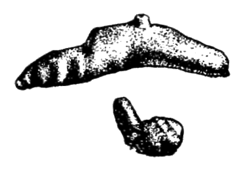

Куркума (curcuma longa l.)
")
Синонимы: куркума длинная, желтый корень, гургемей, зарчава, халди. Многолетнее травянистое растение семейства имбирных.
Родина — Индокитай. Возделывается в Индии, Камбожде, на Цейлоне, в Индонезии (Ява), Южном Китае, Японии, на Филиппинах, на Мадагаскаре и о-ве Реюньоне, в странах Карибского бассейна (Гаити), в СССР — в Закавказье.
Как пряность куркума известна более 2,5 тысяч лет. Сначала ее применяли лишь в Индокитае и Индии, в конце I века куркума впервые была ввезена в древнюю Грецию и с тех пор постоянно ввозится в Европу. Греки называли ее желтым имбирем. В XVI—XVII веках куркума была известна в Западной Европе под названием terra merita — достойная земля. И только с середины XVIII века она приобрела свое нынешнее название куркума — латинизированное арабское. В Средней Азии ее называют зарчава.

В Китай куркума была завезена на 400 лет позже, чем в Европу, но, будучи культивирована там, дала лучшие торговые сорта, весьма ценимые и чрезвычайно редкие на мировом рынке.
Приготовление куркумы-пряности — сложный процесс: свежесобранные корни-клубни куркумы отваривают вместе с определенными специальными красителями, затем высушивают, очищают от кожуры, после чего они приобретают характерный оранжевый цвет.
В качестве пряности употребляются главным образом боковые, длинные корни куркумы, а не центральный корень — клубень.
Готовые корни тверды, на разрезе блестят, как рог, очень плотны, тонут в воде. Они обладают слабо жгучим, слегка горьковатым вкусом, напоминающим имбирь, но их аромат тонок, своеобразен — чрезвычайно приятный, иногда слабо ощутимый.
Обычно куркуму продают не корнями, а в порошке, похожем на тончайшую пудру.
Кроме куркумы длинной, имеется еще 40 видов куркумы, из которых лишь три используются в пищевой промышленности.
Куркума ароматная (Curcuma aromatica Salisb.)
Неверно ее иногда называют «индийским шафраном». Употребляется главным образом в кондитерском производстве, где ценится выше куркумы длинной.
Куркума цедоария (Curcuma zedoaria Rosс), или цитварный корень.
Корень грушевидной формы размером с грецкий орех или голубиное яйцо. Продается не в виде порошка, а разрезанным на маленькие кусочки — дольки под названием «мелкой куркумы». Имеет слегка камфарный запах и горько-жгучий вкус. Используется как заменитель куркумы длинной при производстве ликеров.
Куркума круглая (Curcuma leucorrhizae).
Растение, идущее главным образом для приготовления куркумового крахмала.
* * *Куркума — пряность, широко употребляемая на всем Востоке, особенно в Юго-Восточной Азии, и как приправа к пище, и как пищевой краситель, и, наконец, как медицинское средство.
Куркума является непременным компонентом всех пряных смесей, особенно индийских «карри» и среднеазиатских смесей для плова. Без подливки с куркумой немыслимо ни одно рисовое блюдо в странах Индийского океана.
В Средней Азии и Азербайджане куркума, служит неизменной приправой к пловам. Такие пловы, как «той палови» (свадебный), «янгилик палов» (изобилие), «зарчава палов» (куркумовый), «майиз палов» (плов по-бухарски), вообще невозможно приготовить без куркумы.
В страны Европы и Америки куркума экспортируется в основном из Индии. Наибольшее применение в Европе куркума находит в Англии, где ее традиционно прибавляют ко всем мясным и яичным блюдам и к соусам. В остальных европейских странах куркуму используют в кондитерском производстве и главным образом как пищевой краситель для окраски ликеров, маринадов, масла и сыров, а также при производстве горчицы. Помимо красивой окраски куркума придает пищевому продукту свежесть и делает его более стойким при длительном хранении.
Куркума вносится в пищу в чрезвычайно малых количествах: обычная в таких случаях рекомендация «на кончике ножа» годится для 1 килограмма риса. Вносят куркуму в плов либо непосредственно перед закладкой риса, когда уже полностью готов зирвак (тушеное с маслом мясо, лук и морковь), либо за 3—5 минут до готовности плова, когда вода почти полностью выкипает.